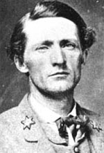

|

|

|
|
|
Confederate colonel John Singleton Mosby was a leader of
the Partisan Rangers in northern Virginia from 1863-1865.
Originally a scout for Major General J.E.B. "Jeb" Stuart in
the First Virginia Cavalry, Mosby successfully lobbied for
his own company, which grew from nine men to as many as
nineteen hundred before the war's end, with no less than
four hundred serving at one time. His guerrilla operations in
Virginia were an interminable nuisance to the Union picket
posts in the defensive parameters around Washington, D.C.,
as well as to Union army efforts in the Shenandoah Valley.
He constantly diverted troops, supplies, and attention away
from intended Union campaigns, often capturing forces
several times larger than his own.
Born on December 6, 1833 in Powhatan County, Virginia,
Mosby was a sickly child, though intelligent and well-read.
He attended college at the University of Virginia in
Charlottesville, until he was expelled and imprisoned for
shooting a fellow student. While in jail, he studied law,
and upon his release he practiced law in Howardsville,
Virginia. In 1857, he married Pauline Clarke of Frankfort,
Kentucky, and they moved to Bristol, Virginia, a year later.
In December of 1860 he enrolled in the state militia, and
became a Confederate cavalryman when Virginia seceded in
April 1861.
Mosby quickly became one of Jeb Stuart's most trusted
scouts, obtaining information that helped pave the way for
Stuart's raid around the Union Army during the Peninsular
Campaign of 1862. Like Stuart, Mosby was flamboyant in
dress. Sporting an ostrich plume in his hat, the slight,
blonde cavalier wore a gray cope with bright red lining. In
January of 1863, Stuart permitted Mosby and a detail of nine
men from the First Virginia Cavalry to begin partisan, or
guerrilla, operations in Loudoun County, Virginia. The
outfit officially became the Forty-Third Battalion of
Virginia Cavalry in June 1863, and Mosby was promoted to
colonel in December 7, 1864. The battalion's operations
were based in Loudoun and Faquier Counties in north-central
Virginia, an area that became known as "Mosby's
Confederacy".
One of the best-known exploits of Mosby's rangers was the
capture of Union Brigadier General Edwin H. Stoughton, who
was captured while sleeping in a house in Virginia, five
miles inside the line of Union defense. Other successful
raids include the "Great Wagon Raid" and the "Greenback
Raid" in August and October 1864, respectively. The rangers
also succeeded in cutting telegraph wires, halting traffic
on the important B&O Railroad, and stalling Union Major
General Phillip Sheridan's supply line during his Shenandoah
Valley Campaign. Although determined and forceful in
command, Mosby and his men never lapsed into the cruel and
criminal behavior that characterized other Southern guerrilla
units.
Rather than surrender his command, Mosby instead
disbanded his battalion on April 21, 1865. After the war,
he practiced law in Warrenton, Virginia, and outraged fellow
Confederate veterans when he expressed Republican sympathies
and actively supported President Ulysses S. Grant's 1872
reelection campaign. Grant admired his former foe and wrote,
"Since the close of the war, I have come to know Colonel
Mosby personally ... He is able and thoroughly honest and
truthful."
Under President Rutherford B. Hayes, Mosby served as
consul in Hong Kong, and helped expose and correct the
abuses of his corrupt predecessors in office. He also
served in the land office in southern Nebraska, and as
assistant attorney in the Justice Department. In 1908, he
published an impassioned defense of Stuart's actions during
the Gettysburg campaign, a topic of hot debate in
Confederate circles after the war. Mosby died on May 30,
1916 at the age of eighty-two.
Source: Joan Waugh, ed., Facts on File Encyclopedia of American
History: Civil War and Reconstruction, 1856 to 1869 (New York: Facts on
File, 2003), 241-242.
|